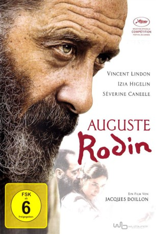
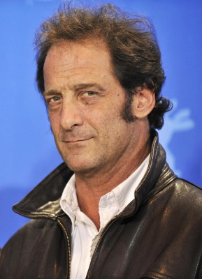
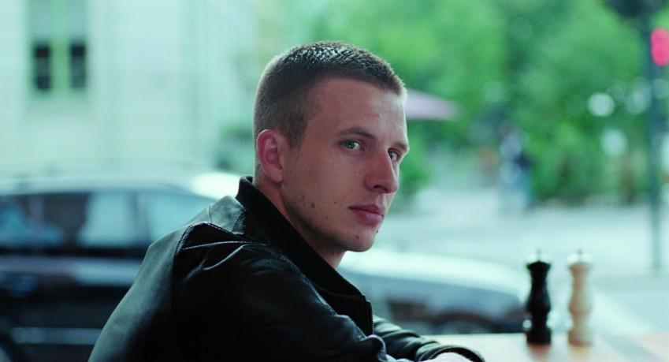

#11214 Auguste Rodin
 
 IMDB-Wertung: 4.8 / 10
IMDB-Wertung: 4.8 / 10  Metascore: 39
Metascore: 39 
Paris 1880. Der ebenso skandalträchtige wie erfolgreiche Bildhauer Auguste Rodin wähnt sich am Ziel seiner Träume. Mit 40 Jahren erhält er seinen ersten Staatsauftrag: „Das Höllentor“ – inspiriert von Dantes „Göttlicher Komödie“ – soll als Bronzeportal den Eingang des neuen Kunstgewerbemuseums im Pariser Louvre schmücken – eine alles verschlingende Arbeit, die zu Rodins Lebenswerk wird. Eine Phase manischen Schaffens beginnt, die durch Rodins Begegnung mit der hochtalentierten, 24 Jahre jüngeren Camille Claudel noch intensiver wird. Mehr als ein Jahrzehnt ist sie seine Schülerin und Geliebte – eine Beziehung zwischen zwei Genies, die ebenso leidenschaftlich wie turbulent verläuft. Inspiriert von der Modernität seiner Geliebten stürzt sich Rodin mit noch größerer Besessenheit in seine Arbeit, erlebt Triumphe und Niederlagen – und gilt mit 60 Jahren als wohl größter Bildhauer aller Zeiten, vergleichbar nur mit Michelangelo…
Jahr: 2017
Dauer: 120 Minuten
FSK: 6
Land: Frankreich Studio: Wild BunchTonspuren:
Untertitel: Deutsch,
Auflösung: 1080p (1920x808) Größe: 3143 MB
Genre: Drama, Liebe, Biographie
Regisseur: Jacques Doillon
Drehbuch: Jacques Doillon
Soundtrack: Philippe Sarde
Darsteller:
-  Vincent Lindon als Auguste Rodin
- Izïa Higelin als Camille Claudel
- Séverine Caneele als Rose Beuret
 Bernard Verley als Victor Hugo
Bernard Verley als Victor Hugo-  Anders Danielsen Lie als Rainer Maria Rilke
- Morgane de Vargas als Modèle Thérèse Fontaine
- Serge Bagdassarian als Membre 2
- Anthony Bajon als Auguste Beuret
- Magdalena Malina als Sophie Postolska
- Olivia Baes als Gwen Mary John
- Zina Esepciuc als Modèle 1
- Edward Akrout als Edward Steichen
- Arthur Nauzyciel als Paul Cézanne
- Laurent Poitrenaux als Octave Mirbeau
- Olivier Cadiot als Claude Monet
- Alexandre Haulet als Assistant Rodin
- Louise Le Pape als Adèle Abruzzesi
- Nia Acosta als Soeur d'Adèle Abruzzesi
- Pauline Cousty als Mademoiselle Octavie
- Cendrine Gourbin als Modèle de Pierre Louÿs
- Guylène Péan als Juliette Drouet
- Pierre-Yves Desmonceaux als Ami Victor Hugo
- Lea Jackson als Jessie Lipscomb
- François Neycken als Estager
- Nathalie Bécue als Faiseuse d'anges
- Régis Royer als Membre 1
- Serge Nicolai als Membre 3
- Anne Cécile Quivogne als Femme enceinte
- Patricia Mazuy als Aurélie de Faucamberge
- Pascal Casanova als Ambroise Vollard
- Edouard Duthuillé als François Pompon
- Svetlana Semusheva als Hilda Flodin
- Maxence Tual als Eugène Blot
- Linh als Hanako
- Cléo Sénia als Mademoiselle Fontaine
- Daphné Koustafti als Modèle 2
Datei: X:\2017(A-F)\Auguste Rodin (2017, FSK6, 1920x808).mkv seit 20.05.2019
Festplatte: HD 2017(A-Z)-2018(A-F)
 Es gibt insgesamt 152 Filme in der Gruppe '2017(A-F)'
Es gibt insgesamt 152 Filme in der Gruppe '2017(A-F)'